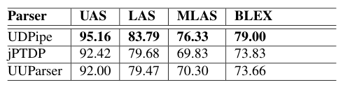
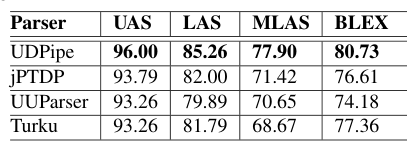
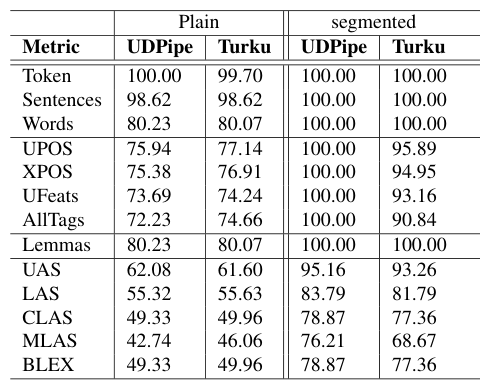

RAIL 2020Traduction automatique
Comparaison des analyseurs de réseaux de neurones pour une langue moins riche en ressources et morphologiquement riche: Analyseur de dépendance amharique
Traduction automatique, non relue par un humain. L'article original est la version de référence ; les phrases soulignées sont celles dont les contrôles automatiques n'étaient pas sûrs.
Proceedings of the first workshop on Resources for African Indigenous Languages.
Traduction par Ernst van Gassen (Arktos AI Lab), sous licence CC BY-NC 4.0 comme l'original. Réutilisation permise avec attribution, à usage non commercial uniquement. Les auteurs originaux n'ont pas relu ni approuvé cette traduction.
Texte brut réutilisable, avec sa licence : Français · LICENCE
Affiliations
Binyam Ephrem Seyoum, Yusuke Miyao, Baye Yimam Mekonnen
Addis Ababa University, University of Tokyo, Addis Ababa University
P.O.Box 1176, Addis Ababa, 7-3-1 Hongo, Bunkyo-ku, Tokyo 113-0033, P.O.Box 1176, Addis Ababa
Adresses e-mail retirées pour la protection de la vie privée. Elles figurent dans le PDF original.
Résumé
Dans cet article, nous comparons quatre analyseurs syntaxiques de réseaux de neurones de pointe pour la langue sémitique amharique. Comme l'amharique est une langue riche en morphologie et peu dotée en ressources, le problème des mots hors vocabulaire (OOV) sera plus élevé lorsque nous développons des modèles basés sur des données. Ce fait limite les chercheurs à développer des analyseurs syntaxiques de réseaux de neurones car le réseau de neurones nécessite de grandes quantités de données pour entraîner un modèle. Nous évaluons empiriquement les analyseurs syntaxiques à base de réseaux de neurones artificiels lorsqu'un petit treebank amharique est utilisé pour l'entraînement. Sur la base de notre expérience, nous obtenons un score LAS de 83,79 en utilisant le système UDPipe. Une meilleure exactitude est atteinte lorsque le système d'analyse syntaxique neuronale utilise des ressources externes comme le plongement lexical. En utilisant de telles ressources, le score LAS pour UDPipe s'améliore à 85,26. Notre expérience montre que les réseaux de neurones peuvent apprendre les relations de dépendance mieux à partir de données limitées tandis que la segmentation et l'étiquetage POS nécessitent beaucoup de données.
Mots-clés
Analyse en dépendances, Réseau de neurones artificiels, Amharique
1. Introduction
L'analyse en dépendances est la tâche qui consiste à analyser automatiquement la structure de dépendances d'une phrase d'entrée donnée (Kübler et al., 2009). Il nécessite une série de décisions pour former la structure syntaxique à la lumière des relations de dépendance. De nos jours, la grammaire de dépendances gagne en popularité en raison de sa capacité à gérer les structures prédicat-argument qui sont nécessaires dans d'autres applications de TAL (Mcdonald et al., 2005). En outre, la grammaire de dépendance est recommandée pour les langues qui ont un ordre des mots libre (Kübler et al., 2009; Tsarfaty et al., 2010). Cependant, bien que l'analyse en dépendances soit adaptable à de nombreuses langues, elle est moins performante avec les langues morphologiquement riches comme l'arabe, le basque et le grec (Dehdari et al., 2011). Il est confirmé dans (Habash, 2010) que des langues comme l’arabe, l’hébreu et l’amharique présentent des défis particuliers pour la conception d’une grammaire de dépendance en raison de leur morphologie et de leur accord complexes.
À partir du milieu du 20e siècle, la recherche en TALN s'est orientée vers les réseaux de neurones. Dans cette ligne de recherche, la langue est représentée sous forme de caractéristiques non linéaires. L’approche s’inspire de la façon dont le calcul fonctionne dans le cerveau (Goldberg, 2017). Elle est appliquée dans des domaines tels que la traduction automatique, la vision par ordinateur et la reconnaissance automatique de la parole. En ce qui concerne l'analyse syntaxique, la vague des analyseurs syntaxiques à réseaux de neurones a été lancée en 2014 par Chen et Manning (Chen et Manning, 2014), qui ont présenté un analyseur syntaxique transitionnel rapide et précis utilisant des réseaux de neurones. Depuis lors, d'autres modèles d'analyse syntaxique ont employé diverses techniques telles que stack LSTM (Dyer et al., 2015 ; Kiperwasser et Goldberg, 2016), normalisation globale (Andor et al., 2016), attention biaffine (Dozat et Manning, 2017) ou grammaires de réseaux de neurones récurrents (Dyer et al., 2016 ; Kuncoro et al., 2017). Grâce à l'existence d'un treebank pour différentes langues et aux tâches partagées de CoNLL 2017 (Zeman et al., 2017) et 2018 (Zeman et al., 2018), de grandes améliorations en analyse en dépendances utilisant des réseaux de neurones artificiels ont été rapportées. Par exemple, l'analyseur syntaxique neuronal fondé sur les graphes de Dozat et al. (Dozat et al., 2017) a remporté la tâche partagée CoNLL2017 UD. Dans la tâche partagée CoNLL2018 UD, le système gagnant était celui de Che et al. (Che et al., 2018). Ces systèmes ont amélioré l'approche par réseau de neurones artificiels de l'analyse syntaxique grâce à l'application de fonctions d'optimisation et de ressources externes telles que le plongement lexical. De nos jours, l'état de l'art en analyse syntaxique repose sur des réseaux de neurones artificiels intégrant le plongement lexical.
Dans cet article, nous présentons notre expérience de développement d'un analyseur syntaxique de dépendances pour l'amharique en utilisant la méthode de pointe. Les sections restantes sont structurées comme suit. La section 2 donne un bref aperçu du processus de développement de la banque d'arbres amhariques et décrit la banque d'arbres que nous avons utilisée pour l'entraînement des modèles de réseaux neuronaux. La section 3 décrit les systèmes de parsing neuronal que nous utilisons pour développer l'analyseur. La section 4 présente notre comparaison et les résultats que nous avons obtenus. La section finale, la section 5, résume et indique les futures directions de la recherche.
2. Contexte
Un système de parsing peut utiliser un modèle qui est appris à partir d'un treebank pour prédire la structure grammaticale de nouvelles phrases. Cette méthode de développement d'analyseur syntaxique est appelée analyse syntaxique fondée sur les données. L'objectif de l'analyse en dépendances fondée sur les données est d'apprendre à prédire avec précision les graphes de dépendances à partir du treebank. Suivant les directives de dépendance universelle (UD), Binyam et al. (Seyoum et al., 2018) ont développé un treebank pour l'amharique. Dans la construction de cette ressource, ils ont suivi un processus de pipeline. Les clitiques comme les prépositions, les articles, les opérateurs de négation, etc. ont été segmentés manuellement à partir de leur hôte. Ensuite, les données segmentées ont été annotées pour le POS, les informations morphologiques et les dépendances syntaxiques basées sur le schéma d'annotation UD.
Le treebank amharique (ATT) version 1 contient 1 074 phrases annotées manuellement (5 245 tokens ou 10 010 mots). Les phrases ont été collectées à partir de livres de grammaire, de biographies, d'actualités, ainsi que de textes fictifs et religieux. Les chercheurs ont fait un effort pour inclure différents types de phrases. Les données sont incluses sur le site web UD.
3. Analyseurs de réseaux neuronaux
Ces dernières années, de nombreux analyseurs de dépendances rapides et précis ont été rendus disponibles publiquement. En raison de la tâche partagée sur l'analyse en dépendances et de la présence de treebanks pour différentes langues, de nouvelles méthodes d'analyse syntaxique ont été introduites chaque année (Lavelli, 2016 ; Zeman et al., 2017). Certains des systèmes nécessitent beaucoup de ressources et de grandes banques d'arbres tandis que d'autres sont faciles à adapter à de nouveaux langages qui ont peu de ressources. Avec ce contexte, nous avons sélectionné quatre systèmes d'analyse syntaxique prêts à l'emploi pour tester l'amharique. Les systèmes sont : UDPipe, JPTDP, UUParser et Turku.
3.1 UDPipe
UDPipe est un système d'analyse syntaxique en pipeline open source et entraînable. Il effectue la segmentation de phrases, la tokenisation, l'étiquetage morpho-syntaxique, la lemmatisation, l'analyse morphologique et l'analyse en dépendances (Straka et al., 2016). Après qu'un modèle est entraîné sur le format CoNLL-U, il effectue à la fois la segmentation de phrases et la tokenisation conjointement en utilisant un réseau de Gated Recurrent Unit (GRU) bidirectionnel à une seule couche (Straka et al., 2017). Les tâches d'étiquetage morphosyntaxique (POS tagging), de lemmatisation et d'analyse morphologique sont réalisées à l'aide de MorphoDiTa de (Straková et al., 2014).
Le système d'analyse syntaxique de UDPipe est basé sur Parsito, (Straková et al., 2014) un système basé sur des transitions capable d'analyser des phrases non projectives et projectives. Pour les phrases non projectives, il utilise le système arc-standard de Nivre (Nivre, 2014). Pour gérer les phrases non projectives, il a une transition supplémentaire appelée "swap" qui réorganise deux mots. Il utilise des classificateurs de réseaux neuronaux pour prédire les transitions correctes. Dans le but d'améliorer l'exactitude de l'analyse syntaxique, il ajoute des oracles basés sur la recherche. Il inclut également un décodage par recherche de faisceaux optionnelle, similaire à celui de Zhang et Nivre (Zhang et Nivre, 2011).
3.2. jPTDP
jPTDP est un modèle conjoint pour l'étiquetage de catégorie grammaticale (POS) et l'analyse en dépendances (Nguyen et Verspoor, 2018). Il a été publié en deux versions; pour notre expérience, nous avons utilisé la dernière version, jPTDP v2.0. Ce modèle est basé sur le parseur de dépendances graphique BIST de Kiperwasser et Goldberg (Kiperwasser et Goldberg, 2016). Étant donné les tokens de mots dans une phrase d'entrée, le composant d'étiquetage utilise un BiLSTM pour apprendre des vecteurs de caractéristiques latentes représentant les tokens. Ensuite, le composant de marquage alimente ces vecteurs de caractéristiques dans un perceptron multicouche (MLP) avec une couche cachée pour prédire les balises POS.
Le composant d'analyse syntaxique utilise un autre BiLSTM pour apprendre un ensemble de représentations de caractéristiques latentes qui sont basées à la fois sur les tokens d'entrée et les étiquettes POS prédites. Ces représentations sont fournies à une MLP pour décoder les arcs de dépendance et à une autre MLP pour étiqueter les arcs de dépendance prédits.
3.3. UUParser
UUParser (version 2.3) est un système en pipeline pour l'analyse en dépendances qui se compose de trois composants (de Lhoneux et al., 2017). Le premier composant effectue une segmentation conjointe des mots et des phrases, le deuxième prédit les étiquettes POS et les caractéristiques morphologiques, et le troisième prédit la relation de dépendance à partir des mots et des étiquettes POS (Nivre, 2008). La segmentation des mots et des phrases est modélisée conjointement comme un étiquetage de séquence au niveau des caractères, employant des réseaux neuronaux récurrents bidirectionnels (BiRNN) ainsi qu'un CRF (de Lhoneux et al., 2017).
Les prédictions des étiquettes POS et des caractéristiques morphologiques sont réalisées à l'aide d'un modèle Meta-BiLSTM avec un encodage de jetons sensible au contexte. Cette méthode est adoptée à partir des travaux de Bohnet et al. (Bohnet et al., 2018). La méthode applique BiLSTM à la modélisation des mots et des caractères au niveau de la phrase, donnant au modèle accès au contexte de la phrase. Les modèles de caractères et de mots sont combinés dans les Meta-BiLSTM. Dans le Meta-BiLSTM, ils concatènent la sortie, pour chaque mot, (de son embedding basé sur les caractères et les mots sensibles au contexte) et la passent à un autre BiLSTM pour créer un encodage contextuel combiné supplémentaire. Cela est suivi d'un MLP final, dont la sortie est transmise à une couche linéaire pour la prédiction des étiquettes POS.
Le troisième composant est l'analyse en dépendances, dans laquelle un analyseur syntaxique glouton à base de transitions (Nivre, 2008) est appliqué, en suivant le cadre de Kiperwasser et Goldberg (Kiperwasser et Goldberg, 2016). Le framework apprend les représentations de tokens en contexte à l'aide de BiLSTM. Le contexte du token ainsi que la transition (étiquettes d'arc) sont entraînés ensemble avec un perceptron multicouche. Cela permet au modèle de prédire les étiquettes de transition et d'arc basées sur quelques vecteurs BiLSTM. Les auteurs introduisent également un oracle statique-dynamique, qui permet à l'analyseur syntaxique d'apprendre à partir de configurations non optimales au moment de l'entraînement.
3.4 Turku Parser
Turku est un pipeline d'analyse syntaxique neuronale pour la segmentation, l'étiquetage morphologique, l'analyse en dépendances et la lemmatisation (Kanerva et al., 2018). Pour la segmentation de phrases et la tokenisation, le système s'appuie sur la sortie de UDPipe. Le pipeline permet d'inclure des embeddings pré-entraînés dans l'apprentissage.
Le marquage est effectué en utilisant le système de Dozat et al. (Dozat et al., 2017) qui applique un classificateur affine distribué dans le temps aux tokens au sein d'une phrase. Les tokens sont d'abord intégrés avec un encodeur de mots. L'encodeur additionne un plongement de token appris, un plongement de token pré-entraîné et un plongement de token encodé à partir de la séquence de ses caractères à l'aide d'un LSTM unidirectionnel. Ensuite, un LSTM bidirectionnel lit la séquence de tokens intégrés dans une phrase pour créer des représentations de tokens sensibles au contexte. Ces représentations sont ensuite transformées avec des couches ReLU séparément pour chaque couche de classification de tag affine (à savoir UPOS et XPOS). Ces deux couches de classification sont entraînées conjointement en faisant la somme de leurs pertes d'entropie croisée.
La lemmatisation est un autre pipeline dans l'analyseur syntaxique Turku dans lequel les chercheurs développent leur propre composant de lemmatisation. Le système considère la lemmatisation comme un problème de traduction séquence-à-séquence. Ils considèrent un mot comme une entrée, une séquence de caractères qui sont concaténés avec une séquence de sa catégorie grammaticale et de ses étiquettes morphologiques. La sortie est basée sur le lemme correspondant représenté comme une séquence de caractères. Les chercheurs entraînent essentiellement leur système à traduire les caractères de forme de mot et les balises morphologiques en caractères de lemme. Ils utilisent un réseau encodeur-décodeur à attention profonde avec un encodeur LSTM bidirectionnel à deux couches pour lire la séquence de caractères d'entrée et d'étiquettes morphologiques. En conséquence, ils ont obtenu des vecteurs pour l'encodeur de séquence. Pendant la phase de décodage, ils ont appliqué une recherche en faisceau avec une taille de cinq.
La tâche d'étiquetage syntaxique dans l'analyseur syntaxique Turku est basée sur le système développé par Dozat et al. (Dozat et al., 2017). Les chercheurs suivent des méthodes similaires à celles qu'ils ont mises en œuvre pour le module d'étiquetage POS, où les jetons ont été intégrés avec un encodeur de mots. L'encodeur de mot additionne ensuite le plongement de token appris, un plongement de token pré-entraîné et un plongement de token encodé à partir de la séquence de ses caractères à l'aide d'un LSTM unidirectionnel. Les tokens intégrés sont ensuite concaténés avec les plongements POS respectifs. BiLSTM lit ensuite la séquence de jetons intégrés dans une phrase afin que le système dispose de représentations de jetons sensibles au contexte. Les représentations de jetons sont ensuite transformées en utilisant quatre couches ReLU différentes séparément pour deux classificateurs biaffines différents. Le classificateur note les relations possibles (HEAD) et leurs types de dépendance (DEPREL), et les meilleures prédictions sont ensuite décodées pour former un arbre. Ces classificateurs de relations et de types sont à nouveau entraînés conjointement en additionnant leurs pertes d'entropie croisées. Référez-vous à (Dozat et Manning, 2017) et (Dozat et al., 2017) pour le processus détaillé.
4. Comparaison des analyseurs de réseaux neuronaux
Avant de discuter de la comparaison, nous décrivons la configuration expérimentale que nous avons suivie. La pratique standard de préparation des données consiste à diviser les données en ensembles d'entraînement, de développement et de test, généralement 80 pour cent pour l'entraînement, et 10 pour cent chacun pour le développement et le test. Cependant, l'ensemble de données dont nous disposons est trop petit pour être divisé en de telles proportions. À la place, nous effectuons une validation croisée en dix parties (Zeman et al., 2017), en sélectionnant et groupant aléatoirement un nombre égal de phrases en dix ensembles. Les données que nous avons utilisées pour cet article sont disponibles gratuitement à l'adresse http://github.com/Binyamephrem/Amharic-treebank. Pendant la phase d'entraînement, les données des neuf ensembles sont utilisées comme ensemble d'entraînement et testées contre les phrases de l'ensemble restant.
4.1. Résultats expérimentaux
Dans le tableau 1, nous présentons les résultats de l'évaluation des systèmes de parsing que nous avons entraînés. Afin de rendre l'évaluation équitable, la première expérience est menée en excluant les autres ressources externes. Puisque le parseur de Turku nécessite un embedding de mots pré-entraîné, nous l'excluons de cette comparaison. À des fins d'évaluation, nous utilisons le script d'évaluation conllu18, qui exige que les données soient au format CoNLL-U et nous donne des résultats d'évaluation pour ULA, LAS, MLAS et BLEX en comparant la sortie du système avec les données de référence.

Tableau 1 : Comparaison des systèmes de parsing
Dans toutes les mesures, UDPipe surpasse à la fois jPTDP et UUParser. LAS calcule le pourcentage de mots qui sont assignés à la fois à la tête syntaxique correcte et à l'étiquette de dépendance correcte. Un système avec un résultat LAS plus élevé aura également un résultat plus élevé dans les autres mesures. Cependant, une différence significative est observée dans le score MLAS (6,03-6,50). MLAS se concentre spécifiquement sur l'évaluation combinée des caractéristiques UPOS et morphologiques. À la fois UDPipe et UUParser sont des systèmes en pipeline tandis que jPTDP est un modèle conjoint. Le score de jPTDP sur MLAS est pire, probablement parce que le modèle se concentre uniquement sur le marquage POS et l'étiquetage des dépendances. Ainsi, il peut être injustifié de les comparer sur ce score car jPTDP ne prend pas en compte les étiquettes morphologiques dans le modèle. La même logique est applicable en ce qui concerne le score BLEX. BLEX se concentre sur les relations entre les mots de contenu en considérant les lemmes, qui ne sont pas modélisés dans jPTDP. Le score que nous avons obtenu pour jPTDP résulte probablement du fait que le système voit des lemmes de référence ou les données d'entrée.
4.2. Modèle d'analyse syntaxique amélioré avec des ressources externes
Nous avons mené une autre expérience dans laquelle les modèles peuvent être améliorés par des ressources externes. Une méthode d'amélioration d'un modèle consiste à utiliser une représentation vectorielle de mots pré-entraînée. À cette fin, nous avons utilisé le modèle entraîné pour l'amharique en utilisant fasttext. Les données pour l'entraînement du modèle proviennent de Wikipédia et de Common Crawl. Les modèles ont été entraînés en utilisant le sac de mots continu (CBOW) avec pondération positionnelle, en dimension 300, et en considérant des n-grammes de caractères de longueur 5 avec une fenêtre de taille 5 et 10 négatifs (Grave et al., 2018).
Dans cette comparaison, nous avons inclus l'analyseur syntaxique Turku car il nécessite un plongement lexical pré-entraîné. Le tableau 2 présente les résultats lorsque chaque modèle est amélioré avec un plongement lexical.

Tableau 2 : Modèle amélioré avec un embedding de mots pré-entraîné
On peut observer qu'une représentation vectorielle de mots pré-entraînée augmente les performances du modèle dans chaque système. Le pourcentage d'amélioration varie selon le système. jPTPD obtient de meilleurs scores dans toutes les mesures, ce qui indique que le système bénéficie du modèle pré-entraîné. Par exemple, il y a une amélioration de 2,32% par rapport à la mesure LAS, qui pourrait être attribuée à la petite banque d'arbres utilisée dans l'expérience. Une autre raison pour la plus grande amélioration du modèle jPTPD pourrait être liée à la représentation de mots "inconnus", qui sont communs dans les langues morphologiquement riches. jPTPD utilise des représentations basées sur les caractères fondées sur LSTM, qui produisent des plongements à partir d'une séquence de caractères. Cela confirme qu’un modèle de caractères est préférable pour les langages morphologiquement riches avec des rapports type-jeton élevés (Smith et al., 2018). Étant donné que UDPipe obtient de meilleurs résultats en premier lieu, l'augmentation due aux plongements lexicaux est naturellement plus faible. De telles améliorations sont parfois évaluées en utilisant la réduction relative des erreurs. Pour UDPipe, la réduction relative de l'erreur est d'environ ∼ 9 %. Cela signifie que 9 % des erreurs du système sans plongements lexicaux sont réduites en utilisant un plongement lexical. De même, la réduction relative des erreurs pour jPTDP est de ∼ 11,4 %. Même par cette mesure, UDPipe n'a pas bénéficié autant que jPTDP.

Tableau 3 : Texte brut et texte segmenté
4.3. Effet du pipeline sur le système de parsing
Une autre expérience que nous avons menée concerne l'effet de chaque pipeline sur les performances des analyseurs syntaxiques lorsque l'entrée est du texte brut. Pour ce faire, nous utilisons à la fois UDPipe et Turku Parser. Les analyseurs syntaxiques restants nécessitent un modèle de segmentation séparé ou une entrée au format CoNLL-U. Nous comparons les scores de segmentation, d'étiquetage et d'analyse syntaxique des deux analyseurs syntaxiques. Le tableau 3 présente les scores de chaque système lorsque l'entrée est du texte brut et du texte segmenté.
Nous remarquons qu'il existe un grand écart de LAS entre la segmentation de référence et la segmentation prédite. Cela peut être causé par de mauvaises prédictions de mots, ce qui à son tour abaisse la prédiction de marquage. Les scores de segmentation en tokens et en phrases sont élevés pour les deux analyseurs syntaxiques. Cependant, les scores de segmentation en mots pour les deux analyseurs syntaxiques ont chuté de manière significative, passant de 98 % à 80 %. Le résultat d'étiquetage pour l'analyseur syntaxique Turku est meilleur lors de l'utilisation de la segmentation de référence (93-95 %), mais une forte diminution est observée (74-77 %) lors de l'utilisation de la segmentation prédite (ou du texte brut). En conséquence, les scores d'attachement de dépendance diminuent également de manière significative (42-62%). Cela prouve que la propagation des erreurs dans chaque pipeline affecte grandement les scores d'attachement.
On peut également remarquer dans le Tableau 3 que pour UDPipe avec l'entrée segmentée, le système utilise apparemment les étiquettes POS et les caractéristiques morphologiques de référence (les scores sont de 100 %). Ainsi, ces chiffres ne peuvent pas être comparés à ceux du pipeline Turku. Pour la même raison, les scores LAS pour Turku avec une entrée segmentée et pour UDPipe avec une entrée segmentée ne peuvent pas être comparés. Il y a toujours une amélioration lorsque l'analyseur syntaxique peut accéder aux étiquettes de référence et aux étiquettes morphologiques. S'il existe un tokeniseur et un étiqueteur parfaits, de meilleurs scores LAS peuvent être obtenus. Même si l'analyseur syntaxique Turku utilise le modèle de segmentation d'UDPipe, les scores d'étiquetage pour Turku sont légèrement meilleurs que pour UDPipe lorsque du texte brut est fourni aux deux systèmes.
5. Résumé et orientations futures
Cet article a présenté une comparaison d'analyseurs syntaxiques à réseaux de neurones artificiels. Sur la base de notre comparaison, nous avons obtenu un score LAS de 83,79 en utilisant le système UDPipe. Cela peut être amélioré à 85,26 avec des ressources externes, c'est-à-dire des embeddings de mots. À partir des expériences, nous pouvons recommander ce qui fonctionnera mieux pour l'amharique. Un analyseur syntaxique pour l'amharique nécessite une segmentation des clitiques avant l'étiquetage. Pour cette tâche, nous recommandons UDPipe. Cependant, la performance de la segmentation doit être améliorée car elle affecte considérablement la précision de l'étiquetage et de l'attachement.
Nous avons comparé à la fois des modèles en pipeline et des modèles conjoints pour l'étiquetage et l'analyse syntaxique. Parmi les systèmes en pipeline, le système d'analyse de Turku obtient de meilleurs résultats dans la tâche d'étiquetage. Cependant, nous avons noté que les systèmes d'analyse syntaxique qui suivent l'approche en pipeline doivent disposer d'un module de segmentation et d'étiquetage plus efficace. Comme les erreurs se propagent d'un pipeline à l'autre, l'analyse syntaxique ou l'attachement des dépendances est gravement affecté. Si un modèle conjoint est préféré, il faut considérer l'étiquetage morphologique en plus de l'étiquetage POS. Notre expérience montre que le modèle conjoint est un domaine de recherche prometteur pour des études ultérieures. Le jPTDP se concentre uniquement sur les informations POS et d'attachement.
Nous avons l'intention de poursuivre nos recherches de deux manières. Comme les données sur lesquelles le modèle de segmentation a été entraîné étaient très limitées, nous prévoyons d'étendre les données afin que le modèle de segmentation puisse être amélioré. Nous pouvons utiliser la prédiction de segmentation actuelle sur un ensemble de données plus grand et corriger manuellement la segmentation prédite afin d'avoir un meilleur modèle de segmentation. De plus, nous étudierons l'effet de l'apprentissage d'un modèle conjoint de marquage morphologique en plus du marquage POS et de l'attachement de dépendance.
Nous concluons que, même si nous avons une petite banque d'arbres, nous pouvons encore développer un analyseur syntaxique raisonnablement efficace pour l'amharique. C'est-à-dire que les modèles syntaxiques peuvent être appris à partir d'une petite banque d'arbres. Cependant, les données de la banque d'arbres doivent être soigneusement sélectionnées pour inclure les modèles syntaxiques existants dans la langue. L'aspect difficile dans les recherches futures sera l'apprentissage des étiquettes pour les nouveaux items lexicaux.
Notes
1 https://universaldependencies.org/
2 https://ufal.mff.cuni.cz/udpipe
3 https://github.com/datquocnguyen/jPTDP
4 https://github.com/UppsalaNLP/uuparser
5 https://turkunlp.org/Turku-neural-parser-pipeline
6 http://universaldependencies.org/conll18/conll18_ud_eval.py
7 https://fasttext.cc/docs/en/crawl-vectors.html
8 http://commoncrawl.org
9 Il est calculé comme (85,26 - 83,79) / (100 - 83,79)
10 Il est calculé comme (82,00-79,68) / (100-79,68)
6. Références bibliographiques
Andor, D., Alberti, C., Weiss, D., Severyn, A., Presta, A., Ganchev, K., Petrov, S., and Collins, M. (2016). Globally Normalized Transition-Based Neural Networks. Association for Computational Linguistics, arXiv preprint arXiv:1603.06042.
Bohnet, B., McDonald, R., Simoes, G., Andor, D., Pitler, E., and Maynez, J. (2018). Morphosyntactic Tagging with a Meta-BiLSTM Model over Context Sensitive Token Encodings. In Proceedings of the 56 th Annual Meeting of the Association for Computational Linguistics (Long Papers), pages 2642-2652, Melbourne, Australia. Association for Computational Linguistics.
Che, W., Liu, Y., Wang, Y., Zheng, B., and Liu, T. (2018). Towards Better UD Parsing: Deep Contextualized Word Embeddings, Ensemble, and Treebank Concatenation. In Proceedings of the CoNLL 2018 Shared Task: Multilingual Parsing from Raw Text to Universal Dependencies, pages 55-64.
Chen, D. and Manning, C. D. (2014). A Fast and Accurate Dependency Parser using Neural Networks. In Proceedings of the 2014 Conference on Empirical Methods in Natural Language Processing (EMNLP), pages 740-750, Doha, Qatar.
de Lhoneux, M., Shao, Y., Basirat, A., Kiperwasser, E., Stymne, S., Goldberg, Y., and Nivre, J. (2017). From raw text to universal dependencies-look, no tags! In Proceedings of the CoNLL 2017 Shared Task: Multilingual Parsing from Raw Text to Universal Dependencies, pages 207-217.
Dehdari, J., Tounsi, L., and van Genabith, J. (2011). Morphological Features for Parsing Morphologically-rich Languages: A Case of Arabic. In Proceedings of the 2nd Workshop on Statistical Parsing of Morphologically-Rich Languages (SPMRL 2011), pages 12-21, Dublin, Ireland. Association for Computational Linguistics.
Dozat, T. and Manning, C. D. (2017). Deep Biaffine Attention for Neural Dependency Parsing. In ICLR2017.
Dozat, T., Qi, P., and Manning, C. D. (2017). Stanford's Graph-based Neural Dependency Parser at the CoNLL 2017 Shared Task. (2016):20-30.
Dyer, C., Ballesteros, M., Ling, W., Matthews, A., and Smith, N. A. (2015). Transition-Based Dependency Parsing with Stack Long Short-Term Memory. In Proceedings of the 53rd Annual Meeting of the Association for Computational Linguistics and the 7 th International Joint Conference on Natural Language Processing, pages 334-343, Beijing, China. Association for Computational Linguistics.
Dyer, C., Kuncoro, A., Ballesteros, M., and Smith, N. A. (2016). Recurrent Neural Network Grammars. In Proc. of NAACL.
Goldberg, Y. (2017). Neural Network Methods for Natural Language Processing. In Synthesis Lectures on Human Language Technologies, volume 10, pages 1-282. Morgan & Claypool Publishers series.
Grave, E., Bojanowski, P., Gupta, P., Joulin, A., and Mikolov, T. (2018). Learning Word Vectors for 157 Languages. In Proceedings of the International Conference on Language Resources and Evaluation (LREC 2018), pages 1-5.
Habash, N. Y. (2010). Introduction to Arabic Natural Language Processing. Synthesis Lectures on Human Language Technologies, 3(1):1-187.
Kanerva, J., Ginter, F., Miekka, N., Leino, A., and Salakoski, T. (2018). Turku Neural Parser Pipeline : An End-to-End System for the CoNLL 2018 Shared Task. In Proceedings of the CoNLL 2018 Shared Task: Multilingual Parsing from Raw Text to Universal Dependencies, pages 133-142.
Kiperwasser, E. and Goldberg, Y. (2016). Simple and Accurate Dependency Parsing Using Bidirectional LSTM Feature Representations. Transactions of the Association for Computational Linguistics, 4:313-327.
Kübler, S., McDonald, R., and Nivre, J. (2009). Dependency Parsing. Synthesis Lectures on Human Language Technologies, 34(1):1-127.
Kuncoro, A., Ballesteros, M., Kong, L., Dyer, C., Neubig, G., and Smith, N. A. (2017). What Do Recurrent Neural Network Grammars Learn About Syntax? arXiv preprint arXiv:1611.05774.
Lavelli, A. (2016). Comparing State-of-the-art Dependency Parsers on the Italian Stanford Dependency Treebank. CLiC it, pages 173-178.
Mcdonald, R., Crammer, K., and Pereira, F. (2005). Online Large-Margin Training of Dependency Parsers. pages 91-98.
Nguyen, D. Q. and Verspoor, K. (2018). An improved neural network model for joint POS tagging and dependency parsing. In Proceedings of the CoNLL 2018 Shared Task: Multilingual Parsing from Raw Text to Universal Dependencies, pages 81-91.
Nivre, J. (2008). Algorithms for Deterministic Incremental Dependency Parsing. Computational Linguistics, 34(4):513-553.
Nivre, J. (2014). Universal Dependencies for Swedish. In The Fifth Swedish Language Technology Conference (Sltc), pages 1579-1585.
Seyoum, B. E., Miyao, Y., and Mekonnen, B. Y. (2018). Universal Dependencies for Amharic. In Nicoletta Calzolari, et al., editors, Proceedings of the Eleventh International Conference on Language Resources and Evaluation (LREC 2018), pages 2216-2222, Miyazaki, Japan. European Language Resources Association (ELRA).
Smith, A., de Lhoneux, M., Stymne, S., and Nivre, J. (2018). An Investigation of the Interactions Between Pre-Trained Word Embeddings, Character Models and POS Tags in Dependency Parsing. In Proceedings of the 2018 Conference on Empirical Methods in Natural Language Processing, pages 2711-2720, Brussels, Belgium. Association for Computational Linguistics.
Straka, M., Hajič, J., and Straková, J. (2016). UDPipe: Trainable Pipeline for Processing CoNLL-U Files Performing Tokenization, Morphological Analysis, POS Tagging and Parsing. In Proceedings of LREC 2016, pages 4290-4297.
Straka, M., Straková, J., and Hajič, J. (2017). Prague at EPE 2017: The UDPipe System. In Proceedings of the 2017 Shared Task on Extrinsic Parser Evaluation at the Fourth International Conference on Dependency Linguistics and the 15 th International Conference on Parsing Technologies, pages 65-74, Pisa (Italy). Association for Computational Linguistics (ACL).
Straková, J., Straka, M., and Hajič, J. (2014). Open-Source Tools for Morphology, Lemmatization, POS Tagging and Named Entity Recognition. In Proceedings of the 52 nd Annual Meeting of the Association for Computational Linguistics: System Demonstrations, pages 13-18, Baltimore, Maryland USA. Association for Computational Linguistics.
Tsarfaty, R., Seddah, D., Goldberg, Y., Kübler, S., Candito, M., Foster, J., Versley, Y., Rehbein, I., and Tounsi, L. (2010). Statistical parsing of morphologically rich languages (SPMRL): what, how and whither. In Proceedings of the NAACL HLT 2010 First Workshop on Statistical Parsing of Morphologically-Rich Languages, pages 1-12, Los Angeles, California. Association for Computational Linguistics.
Zeman, D., Popel, M., Straka, M., Hajic, J., Nivre, J., Ginter, F., Luotolahti, J., Pyysalo, S., Petrov, S., Potthast, M., Tyers, F., Badmaeva, E., Gokirmak, M., Nedoluzhko, A., Cinkova, S., Hajic jr., J., Hlavacova, J., Kettnerová, V., Uresova, Z., Kanerva, J., Ojala, S., Missilä, A., Manning, C. D., Schuster, S., Reddy, S., Taji, D., Habash, N., Leung, H., de Marneffe, M.-C., Sanguinetti, M., Simi, M., Kanayama, H., DePaiva, V., Droganova, K., Martínez Alonso, H., Çöltekin, Ç., Sulubacak, U., Uszkoreit, H., Macketanz, V., Burchardt, A., Harris, K., Marheinecke, K., Rehm, G., Kayadelen, T., Attia, M., Elkahky, A., Yu, Z., Pitler, E., Lertpradit, S., Mandl, M., Kirchner, J., Alcalde, H. F., Strnadová, J., Banerjee, E., Manurung, R., Stella, A., Shimada, A., Kwak, S., Mendonca, G., Lando, T., Nitisaroj, R., and Li, J. (2017). CoNLL 2017 Shared Task: Multilingual Parsing from Raw Text to Universal Dependencies. In Proceedings of the CoNLL 2017 Shared Task: Multilingual Parsing from Raw Text to Universal Dependencies, pages 1-19. Association for Computational Linguistics.
Zeman, D., Hajič, J., Popel, M., Potthast, M., Straka, M., Ginter, F., Nivre, J., and Petrov, S. (2018). CoNLL 2018 Shared Task : Multilingual Parsing from Raw Text to Universal Dependencies. In Proceedings of the CoNLL 2018 Shared Task: Multilingual Parsing from Raw Text to Universal Dependencies, pages 1-21, Brussels, Belgium. Association for Computational Linguistics.
Zhang, Y. and Nivre, J. (2011). Transition-based Dependency Parsing with Rich Non-local Features. In Proceedings of the 49 th Annual Meeting of the Association for Computational Linguistics: short papers, pages 188-193. Association for Computational Linguistics.
English et Français
Comparing Neural Network Parsers for a Less-resourced and Morphologically-rich Language: Amharic Dependency Parser
Comparaison des analyseurs de réseaux de neurones pour une langue moins riche en ressources et morphologiquement riche: Analyseur de dépendance amharique
Affiliations
Binyam Ephrem Seyoum, Yusuke Miyao, Baye Yimam Mekonnen
Addis Ababa University, University of Tokyo, Addis Ababa University
P.O.Box 1176, Addis Ababa, 7-3-1 Hongo, Bunkyo-ku, Tokyo 113-0033, P.O.Box 1176, Addis Ababa
,
Affiliations
Binyam Ephrem Seyoum, Yusuke Miyao, Baye Yimam Mekonnen
Addis Ababa University, University of Tokyo, Addis Ababa University
P.O.Box 1176, Addis Ababa, 7-3-1 Hongo, Bunkyo-ku, Tokyo 113-0033, P.O.Box 1176, Addis Ababa
,
Abstract
Résumé
In this paper, we compare four state-of-the-art neural network dependency parsers for the Semitic language Amharic. As Amharic is a morphologically-rich and less-resourced language, the out-of-vocabulary (OOV) problem will be higher when we develop data-driven models. This fact limits researchers to develop neural network parsers because the neural network requires large quantities of data to train a model. We empirically evaluate neural network parsers when a small Amharic treebank is used for training. Based on our experiment, we obtain an 83.79 LAS score using the UDPipe system. Better accuracy is achieved when the neural parsing system uses external resources like word embedding. Using such resources, the LAS score for UDPipe improves to 85.26. Our experiment shows that the neural networks can learn dependency relations better from limited data while segmentation and POS tagging require much data.
Dans cet article, nous comparons quatre analyseurs syntaxiques de réseaux de neurones de pointe pour la langue sémitique amharique. Comme l'amharique est une langue riche en morphologie et peu dotée en ressources, le problème des mots hors vocabulaire (OOV) sera plus élevé lorsque nous développons des modèles basés sur des données. Ce fait limite les chercheurs à développer des analyseurs syntaxiques de réseaux de neurones car le réseau de neurones nécessite de grandes quantités de données pour entraîner un modèle. Nous évaluons empiriquement les analyseurs syntaxiques à base de réseaux de neurones artificiels lorsqu'un petit treebank amharique est utilisé pour l'entraînement. Sur la base de notre expérience, nous obtenons un score LAS de 83,79 en utilisant le système UDPipe. Une meilleure exactitude est atteinte lorsque le système d'analyse syntaxique neuronale utilise des ressources externes comme le plongement lexical. En utilisant de telles ressources, le score LAS pour UDPipe s'améliore à 85,26. Notre expérience montre que les réseaux de neurones peuvent apprendre les relations de dépendance mieux à partir de données limitées tandis que la segmentation et l'étiquetage POS nécessitent beaucoup de données.
Keywords
Mots-clés
Dependency Parsing, Neural Network, Amharic
Analyse en dépendances, Réseau de neurones artificiels, Amharique
1. Introduction
1. Introduction
Dependency parsing is the task of analyzing the dependency structure of a given input sentence automatically (Kübler et al., 2009). It requires a series of decisions to form the syntactic structure in the light of dependency relations. Nowadays, dependency grammar is gaining popularity because of its capability to handle predicate-argument structures that are needed in other NLP applications (Mcdonald et al., 2005). In addition, dependency grammar is recommended for languages that have free word order (Kübler et al., 2009; Tsarfaty et al., 2010). However, while dependency parsing is adaptable to many languages, it performs less well with morphologically rich languages like Arabic, Basque, and Greek (Dehdari et al., 2011). It is confirmed in (Habash, 2010), that languages like Arabic, Hebrew, and Amharic present a special challenges for the design of a dependency grammar due to their complex morphology and agreement.
L'analyse en dépendances est la tâche qui consiste à analyser automatiquement la structure de dépendances d'une phrase d'entrée donnée (Kübler et al., 2009). Il nécessite une série de décisions pour former la structure syntaxique à la lumière des relations de dépendance. De nos jours, la grammaire de dépendances gagne en popularité en raison de sa capacité à gérer les structures prédicat-argument qui sont nécessaires dans d'autres applications de TAL (Mcdonald et al., 2005). En outre, la grammaire de dépendance est recommandée pour les langues qui ont un ordre des mots libre (Kübler et al., 2009; Tsarfaty et al., 2010). Cependant, bien que l'analyse en dépendances soit adaptable à de nombreuses langues, elle est moins performante avec les langues morphologiquement riches comme l'arabe, le basque et le grec (Dehdari et al., 2011). Il est confirmé dans (Habash, 2010) que des langues comme l’arabe, l’hébreu et l’amharique présentent des défis particuliers pour la conception d’une grammaire de dépendance en raison de leur morphologie et de leur accord complexes.
Starting from the mid 20 th century, research in NLP has shifted to neural networks. In this line of research, language is represented in the form of non-linear features. The approach is inspired by the the way computation works in the brain (Goldberg, 2017). It is applied in areas such as machine translation, computer vision, and speech recognition. With regards to parsing, the wave of neural network parsers was started in 2014 by Chen and Manning (Chen and Manning, 2014), who presented a fast and accurate transition-based parser using neural networks. Since then other parsing models have employed various techniques such as stack LSTM (Dyer et al., 2015; Kiperwasser and Goldberg, 2016), global normalization (Andor et al., 2016), biaffine attention (Dozat and Manning, 2017) or recurrent neural network grammars (Dyer et al., 2016; Kuncoro et al., 2017). Due to the existence of a treebank for different languages and the shared task of CoNLL 2017 (Zeman et al., 2017) and 2018 (Zeman et al., 2018), large improvements in dependency parsing using neural networks have been reported. For instance, the neural graph-based parser of Dozat et al. (Dozat et al., 2017) won the CoNLL2017 UD Shared Task. In the CoNLL2018 UD Shared Task, the winning system was that of Che et al. (Che et al., 2018). These systems have improved the neural network approach to parsing through the application of optimization functions and external resources such as word embedding. Nowadays, the state-of-the-art in parsing is neural networks incorporating word embedding.
À partir du milieu du 20e siècle, la recherche en TALN s'est orientée vers les réseaux de neurones. Dans cette ligne de recherche, la langue est représentée sous forme de caractéristiques non linéaires. L’approche s’inspire de la façon dont le calcul fonctionne dans le cerveau (Goldberg, 2017). Elle est appliquée dans des domaines tels que la traduction automatique, la vision par ordinateur et la reconnaissance automatique de la parole. En ce qui concerne l'analyse syntaxique, la vague des analyseurs syntaxiques à réseaux de neurones a été lancée en 2014 par Chen et Manning (Chen et Manning, 2014), qui ont présenté un analyseur syntaxique transitionnel rapide et précis utilisant des réseaux de neurones. Depuis lors, d'autres modèles d'analyse syntaxique ont employé diverses techniques telles que stack LSTM (Dyer et al., 2015 ; Kiperwasser et Goldberg, 2016), normalisation globale (Andor et al., 2016), attention biaffine (Dozat et Manning, 2017) ou grammaires de réseaux de neurones récurrents (Dyer et al., 2016 ; Kuncoro et al., 2017). Grâce à l'existence d'un treebank pour différentes langues et aux tâches partagées de CoNLL 2017 (Zeman et al., 2017) et 2018 (Zeman et al., 2018), de grandes améliorations en analyse en dépendances utilisant des réseaux de neurones artificiels ont été rapportées. Par exemple, l'analyseur syntaxique neuronal fondé sur les graphes de Dozat et al. (Dozat et al., 2017) a remporté la tâche partagée CoNLL2017 UD. Dans la tâche partagée CoNLL2018 UD, le système gagnant était celui de Che et al. (Che et al., 2018). Ces systèmes ont amélioré l'approche par réseau de neurones artificiels de l'analyse syntaxique grâce à l'application de fonctions d'optimisation et de ressources externes telles que le plongement lexical. De nos jours, l'état de l'art en analyse syntaxique repose sur des réseaux de neurones artificiels intégrant le plongement lexical.
In this paper, we present our experiment on developing a dependency parser for Amharic using the state-of-the-art method. The remaining sections are structured as follows. Section 2 gives a brief background about the process of developing the Amharic treebank and describes the treebank we used for training the neural network models. Section 3 describes the neural parsing systems we use to developed the parser. Section 4 presents our comparison and the results we obtained. The final section, Section 5, summarizes and points out the future directions of the research.
Dans cet article, nous présentons notre expérience de développement d'un analyseur syntaxique de dépendances pour l'amharique en utilisant la méthode de pointe. Les sections restantes sont structurées comme suit. La section 2 donne un bref aperçu du processus de développement de la banque d'arbres amhariques et décrit la banque d'arbres que nous avons utilisée pour l'entraînement des modèles de réseaux neuronaux. La section 3 décrit les systèmes de parsing neuronal que nous utilisons pour développer l'analyseur. La section 4 présente notre comparaison et les résultats que nous avons obtenus. La section finale, la section 5, résume et indique les futures directions de la recherche.
2. Background
2. Contexte
A parsing system may use a model which is learned from a treebank to predict the grammatical structure for new sentences. This method of parser development is called data-driven parsing. The goal of data-driven dependency parsing is to learn to accurately predict dependency graphs from the treebank. Following the universal dependency (UD) guidelines, Binyam et al. (Seyoum et al., 2018) developed a treebank for Amharic. In building this resource, they followed a pipeline process. Clitics like prepositions, articles, negation operators, etc. were segmented manually from their host. Then the segmented data were annotated for POS, morphological information and syntactic dependencies based on the UD annotation schema.
Un système de parsing peut utiliser un modèle qui est appris à partir d'un treebank pour prédire la structure grammaticale de nouvelles phrases. Cette méthode de développement d'analyseur syntaxique est appelée analyse syntaxique fondée sur les données. L'objectif de l'analyse en dépendances fondée sur les données est d'apprendre à prédire avec précision les graphes de dépendances à partir du treebank. Suivant les directives de dépendance universelle (UD), Binyam et al. (Seyoum et al., 2018) ont développé un treebank pour l'amharique. Dans la construction de cette ressource, ils ont suivi un processus de pipeline. Les clitiques comme les prépositions, les articles, les opérateurs de négation, etc. ont été segmentés manuellement à partir de leur hôte. Ensuite, les données segmentées ont été annotées pour le POS, les informations morphologiques et les dépendances syntaxiques basées sur le schéma d'annotation UD.
The Amharic treebank (ATT) version 1 contains 1,074 manually-annotated sentences (5,245 tokens or 10,010 words). The sentences were collected from grammar books, biographies, news, and fictional and religious texts. The researchers made an effort to include different types of sentences. The data is included in the UD website.
Le treebank amharique (ATT) version 1 contient 1 074 phrases annotées manuellement (5 245 tokens ou 10 010 mots). Les phrases ont été collectées à partir de livres de grammaire, de biographies, d'actualités, ainsi que de textes fictifs et religieux. Les chercheurs ont fait un effort pour inclure différents types de phrases. Les données sont incluses sur le site web UD.
3. Neural Network Parsers
3. Analyseurs de réseaux neuronaux
In recent years, many fast and accurate dependency parsers have been made available publicly. Due to the shared task on dependency parsing and the presence of treebanks for different languages, every year new parsing methods have been introduced (Lavelli, 2016; Zeman et al., 2017). Some of the systems require a lot of resources and large treebanks while others are easy to adapt to new languages that have few resources. With this background, we have selected four off-the-shelf parsing systems to test for Amharic. The systems are: UDPipe, JPTDP, UUParser and Turku.
Ces dernières années, de nombreux analyseurs de dépendances rapides et précis ont été rendus disponibles publiquement. En raison de la tâche partagée sur l'analyse en dépendances et de la présence de treebanks pour différentes langues, de nouvelles méthodes d'analyse syntaxique ont été introduites chaque année (Lavelli, 2016 ; Zeman et al., 2017). Certains des systèmes nécessitent beaucoup de ressources et de grandes banques d'arbres tandis que d'autres sont faciles à adapter à de nouveaux langages qui ont peu de ressources. Avec ce contexte, nous avons sélectionné quatre systèmes d'analyse syntaxique prêts à l'emploi pour tester l'amharique. Les systèmes sont : UDPipe, JPTDP, UUParser et Turku.
3.1. UDPipe
3.1 UDPipe
UDPipe is an open-source and a trainable pipeline parsing system. It performs sentence segmentation, tokenization, part-of-speech tagging, lemmatization, morphological analysis, and dependency parsing (Straka et al., 2016). After a model is trained on the CoNLL-U format, it performs both sentence segmentation and tokenization jointly using a single-layer bidirectional Gated recurrent unit (GRU) network (Straka et al., 2017). The tasks of POS tagging, lemmatization, and morphological analysis, are performed using the MorphoDiTa of (Straková et al., 2014).
UDPipe est un système d'analyse syntaxique en pipeline open source et entraînable. Il effectue la segmentation de phrases, la tokenisation, l'étiquetage morpho-syntaxique, la lemmatisation, l'analyse morphologique et l'analyse en dépendances (Straka et al., 2016). Après qu'un modèle est entraîné sur le format CoNLL-U, il effectue à la fois la segmentation de phrases et la tokenisation conjointement en utilisant un réseau de Gated Recurrent Unit (GRU) bidirectionnel à une seule couche (Straka et al., 2017). Les tâches d'étiquetage morphosyntaxique (POS tagging), de lemmatisation et d'analyse morphologique sont réalisées à l'aide de MorphoDiTa de (Straková et al., 2014).
The parsing system of UDPipe is based on Parsito, (Straková et al., 2014) a transition-based system which is able to parse both non-projective and projective sentences. For non-projective sentences, it employs the arc-standard system of Nivre (Nivre, 2014). To handle non-projective sentences, it has an extra transition called "swap" that reorders two words. It uses neural network classifiers to predict correct transitions. For the purpose of improving parsing accuracy, it adds search-based oracles. It also includes optional beam search decoding, similar to that of Zhang and Nivre (Zhang and Nivre, 2011).
Le système d'analyse syntaxique de UDPipe est basé sur Parsito, (Straková et al., 2014) un système basé sur des transitions capable d'analyser des phrases non projectives et projectives. Pour les phrases non projectives, il utilise le système arc-standard de Nivre (Nivre, 2014). Pour gérer les phrases non projectives, il a une transition supplémentaire appelée "swap" qui réorganise deux mots. Il utilise des classificateurs de réseaux neuronaux pour prédire les transitions correctes. Dans le but d'améliorer l'exactitude de l'analyse syntaxique, il ajoute des oracles basés sur la recherche. Il inclut également un décodage par recherche de faisceaux optionnelle, similaire à celui de Zhang et Nivre (Zhang et Nivre, 2011).
3.2. jPTDP
3.2. jPTDP
jPTDP is a joint model for part-of-speech (POS) tagging and dependency parsing (Nguyen and Verspoor, 2018). It was released in two versions; for our experiment, we used the latest version, jPTDP v2.0. This model is based on the BIST graph-based dependency parser of Kiperwasser and Goldberg (Kiperwasser and Goldberg, 2016). Given word tokens in an input sentence, the tagging component uses a BiLSTM to learn latent feature vectors representing the tokens. Then the tagging component feeds these feature vectors into a multi-layer perceptron (MLP) with one hidden layer to predict POS tags.
jPTDP est un modèle conjoint pour l'étiquetage de catégorie grammaticale (POS) et l'analyse en dépendances (Nguyen et Verspoor, 2018). Il a été publié en deux versions; pour notre expérience, nous avons utilisé la dernière version, jPTDP v2.0. Ce modèle est basé sur le parseur de dépendances graphique BIST de Kiperwasser et Goldberg (Kiperwasser et Goldberg, 2016). Étant donné les tokens de mots dans une phrase d'entrée, le composant d'étiquetage utilise un BiLSTM pour apprendre des vecteurs de caractéristiques latentes représentant les tokens. Ensuite, le composant de marquage alimente ces vecteurs de caractéristiques dans un perceptron multicouche (MLP) avec une couche cachée pour prédire les balises POS.
The parsing component uses another BiLSTM to learn a set of latent feature representations which are based on both the input tokens and the predicted POS tags. These representations are fed to one MLP to decode dependency arcs and another MLP to label the predicted dependency arcs.
Le composant d'analyse syntaxique utilise un autre BiLSTM pour apprendre un ensemble de représentations de caractéristiques latentes qui sont basées à la fois sur les tokens d'entrée et les étiquettes POS prédites. Ces représentations sont fournies à une MLP pour décoder les arcs de dépendance et à une autre MLP pour étiqueter les arcs de dépendance prédits.
3.3. UUParser
3.3. UUParser
UUParser (version 2.3) is a pipeline system for dependency parsing that consists of three components (de Lhoneux et al., 2017). The first component performs joint word and sentence segmentation, the second predicts POS tags and morphological features, and the third predicts dependency relation from the words and the POS tags (Nivre, 2008). The word and sentence segmentation is jointly modeled as character-level sequence labeling, employing bidirectional recurrent neural networks (BiRNN) together with CRF (de Lhoneux et al., 2017).
UUParser (version 2.3) est un système en pipeline pour l'analyse en dépendances qui se compose de trois composants (de Lhoneux et al., 2017). Le premier composant effectue une segmentation conjointe des mots et des phrases, le deuxième prédit les étiquettes POS et les caractéristiques morphologiques, et le troisième prédit la relation de dépendance à partir des mots et des étiquettes POS (Nivre, 2008). La segmentation des mots et des phrases est modélisée conjointement comme un étiquetage de séquence au niveau des caractères, employant des réseaux neuronaux récurrents bidirectionnels (BiRNN) ainsi qu'un CRF (de Lhoneux et al., 2017).
The predictions of POS tags and morphological features are accomplished using a Meta-BiLSTM model with context-sensitive token encoding. This method is adopted from the work of Bohnet et al. (Bohnet et al., 2018). The method applies BiLSTM to modeling both words and characters at the sentence level, giving the model access to the sentence context. The character and word models are combined in the Meta-BiLSTMs. In the Meta-BiLSTM, they concatenate the output, for each word, (of its context sensitive character and word-based embedding) and pass to another BiLSTM to create an additional combined context sensitive encoding. This is followed by a final MLP, whose output is passed onto a linear layer for POS tag prediction.
Les prédictions des étiquettes POS et des caractéristiques morphologiques sont réalisées à l'aide d'un modèle Meta-BiLSTM avec un encodage de jetons sensible au contexte. Cette méthode est adoptée à partir des travaux de Bohnet et al. (Bohnet et al., 2018). La méthode applique BiLSTM à la modélisation des mots et des caractères au niveau de la phrase, donnant au modèle accès au contexte de la phrase. Les modèles de caractères et de mots sont combinés dans les Meta-BiLSTM. Dans le Meta-BiLSTM, ils concatènent la sortie, pour chaque mot, (de son embedding basé sur les caractères et les mots sensibles au contexte) et la passent à un autre BiLSTM pour créer un encodage contextuel combiné supplémentaire. Cela est suivi d'un MLP final, dont la sortie est transmise à une couche linéaire pour la prédiction des étiquettes POS.
The third component is dependency parsing, in which a greedy transition-based parser (Nivre, 2008) is applied, following the framework of Kiperwasser and Goldberg (Kiperwasser and Goldberg, 2016). The framework learns representations of tokens in context using BiLSTM. Both the token context and the transition (arc labels) are trained together with a multi-layer perceptron. This enables the model to predict transition and arc labels based on a few BiLSTM vectors. The authors also introduce a static-dynamic oracle, which allows the parser to learn from nonoptimal configurations at training time.
Le troisième composant est l'analyse en dépendances, dans laquelle un analyseur syntaxique glouton à base de transitions (Nivre, 2008) est appliqué, en suivant le cadre de Kiperwasser et Goldberg (Kiperwasser et Goldberg, 2016). Le framework apprend les représentations de tokens en contexte à l'aide de BiLSTM. Le contexte du token ainsi que la transition (étiquettes d'arc) sont entraînés ensemble avec un perceptron multicouche. Cela permet au modèle de prédire les étiquettes de transition et d'arc basées sur quelques vecteurs BiLSTM. Les auteurs introduisent également un oracle statique-dynamique, qui permet à l'analyseur syntaxique d'apprendre à partir de configurations non optimales au moment de l'entraînement.
3.4. Turku Parser
3.4 Turku Parser
Turku is a neural parsing pipeline for segmentation, morphological tagging, dependency parsing and lemmatization (Kanerva et al., 2018). For sentence segmentation and tokenization, the system relies on the output of UDPipe. The pipeline allows pre-trained embeddings to be included in the training.
Turku est un pipeline d'analyse syntaxique neuronale pour la segmentation, l'étiquetage morphologique, l'analyse en dépendances et la lemmatisation (Kanerva et al., 2018). Pour la segmentation de phrases et la tokenisation, le système s'appuie sur la sortie de UDPipe. Le pipeline permet d'inclure des embeddings pré-entraînés dans l'apprentissage.
The tagging is done using the system of Dozat et al. (Dozat et al., 2017) which applies a time-distributed affine classifier to the tokens within a sentence. Tokens are first embedded with a word encoder. The encoder sums up a learned token embedding, a pre-trained token embedding, and a token embedding encoded from the sequence of its characters using a unidirectional LSTM. Next, a bidirectional LSTM reads the sequence of embedded tokens in a sentence to create a context-sensitive token representations. These representations are then transformed with ReLU layers separately for each affine tag classification layer (namely UPOS and XPOS). These two classification layers are trained jointly by summing their cross-entropy losses.
Le marquage est effectué en utilisant le système de Dozat et al. (Dozat et al., 2017) qui applique un classificateur affine distribué dans le temps aux tokens au sein d'une phrase. Les tokens sont d'abord intégrés avec un encodeur de mots. L'encodeur additionne un plongement de token appris, un plongement de token pré-entraîné et un plongement de token encodé à partir de la séquence de ses caractères à l'aide d'un LSTM unidirectionnel. Ensuite, un LSTM bidirectionnel lit la séquence de tokens intégrés dans une phrase pour créer des représentations de tokens sensibles au contexte. Ces représentations sont ensuite transformées avec des couches ReLU séparément pour chaque couche de classification de tag affine (à savoir UPOS et XPOS). Ces deux couches de classification sont entraînées conjointement en faisant la somme de leurs pertes d'entropie croisée.
Lemmatization is another pipeline in the Turku parser in which the researchers develop their own lemmatization component. The system considers lemmatization as a sequence-to-sequence translation problem. They consider a word as an input, a sequence of characters which are concatenated with a sequence of its part-of-speech and morphological tags. The output is based on the corresponding lemma represented as a sequence of characters. The researchers essentially train their system to translate the word form characters and morphological tags into lemma characters. They use a deep attention encoder-decoder network with a two-layered bidirectional LSTM encoder for reading the sequence of input characters and morphological tags. As a result, they obtained vectors for the sequence encoder. During the decoding phase, they applied beam search with a size five.
La lemmatisation est un autre pipeline dans l'analyseur syntaxique Turku dans lequel les chercheurs développent leur propre composant de lemmatisation. Le système considère la lemmatisation comme un problème de traduction séquence-à-séquence. Ils considèrent un mot comme une entrée, une séquence de caractères qui sont concaténés avec une séquence de sa catégorie grammaticale et de ses étiquettes morphologiques. La sortie est basée sur le lemme correspondant représenté comme une séquence de caractères. Les chercheurs entraînent essentiellement leur système à traduire les caractères de forme de mot et les balises morphologiques en caractères de lemme. Ils utilisent un réseau encodeur-décodeur à attention profonde avec un encodeur LSTM bidirectionnel à deux couches pour lire la séquence de caractères d'entrée et d'étiquettes morphologiques. En conséquence, ils ont obtenu des vecteurs pour l'encodeur de séquence. Pendant la phase de décodage, ils ont appliqué une recherche en faisceau avec une taille de cinq.
The task of syntactic labeling in the Turku parser is based on the system developed by Dozat et al. (Dozat et al., 2017). The researchers follow methods similar to those that they implemented for the POS tagging module, where tokens were embedded with a word encoder. The word encoder, then, sums up the learned token embedding, a pre-trained token embedding, and a token embedding encoded from the sequence of its characters using unidirectional LSTM. The embedded tokens are then concatenated together with respective POS embeddings. BiLSTM then reads the sequence of embedded tokens in a sentence so that the system has context-aware token representations. The token representations are then transformed using four different ReLU layers separately for two different biaffine classifiers. The classifier scores possible relations (HEAD) and their dependency types (DEPREL), and best predictions are later decoded to form a tree. These relations and type classifiers are again trained jointly by summing up their cross entropy losses. Refer to (Dozat and Manning, 2017) and (Dozat et al., 2017) for the detailed process.
La tâche d'étiquetage syntaxique dans l'analyseur syntaxique Turku est basée sur le système développé par Dozat et al. (Dozat et al., 2017). Les chercheurs suivent des méthodes similaires à celles qu'ils ont mises en œuvre pour le module d'étiquetage POS, où les jetons ont été intégrés avec un encodeur de mots. L'encodeur de mot additionne ensuite le plongement de token appris, un plongement de token pré-entraîné et un plongement de token encodé à partir de la séquence de ses caractères à l'aide d'un LSTM unidirectionnel. Les tokens intégrés sont ensuite concaténés avec les plongements POS respectifs. BiLSTM lit ensuite la séquence de jetons intégrés dans une phrase afin que le système dispose de représentations de jetons sensibles au contexte. Les représentations de jetons sont ensuite transformées en utilisant quatre couches ReLU différentes séparément pour deux classificateurs biaffines différents. Le classificateur note les relations possibles (HEAD) et leurs types de dépendance (DEPREL), et les meilleures prédictions sont ensuite décodées pour former un arbre. Ces classificateurs de relations et de types sont à nouveau entraînés conjointement en additionnant leurs pertes d'entropie croisées. Référez-vous à (Dozat et Manning, 2017) et (Dozat et al., 2017) pour le processus détaillé.
4. Comparing the Neural Network Parsers
4. Comparaison des analyseurs de réseaux neuronaux
Before we discuss the comparison, we describe the experimental set up we followed. The standard practice of preparing data is to divide the data into training, development and test set, usually 80 percent for training, and 10 percent each for development and testing. However, the data set we have is too small to be divided into such proportions. Instead, we carry out ten-fold cross-validation (Zeman et al., 2017), randomly selecting and grouping an equal number of sentences into ten sets. The data we used for this paper are freely available at http://github.com/Binyamephrem/Amharic-treebank. During the training phase, the data in the nine sets are used as a training set and tested against the sentences in the remaining set.
Avant de discuter de la comparaison, nous décrivons la configuration expérimentale que nous avons suivie. La pratique standard de préparation des données consiste à diviser les données en ensembles d'entraînement, de développement et de test, généralement 80 pour cent pour l'entraînement, et 10 pour cent chacun pour le développement et le test. Cependant, l'ensemble de données dont nous disposons est trop petit pour être divisé en de telles proportions. À la place, nous effectuons une validation croisée en dix parties (Zeman et al., 2017), en sélectionnant et groupant aléatoirement un nombre égal de phrases en dix ensembles. Les données que nous avons utilisées pour cet article sont disponibles gratuitement à l'adresse http://github.com/Binyamephrem/Amharic-treebank. Pendant la phase d'entraînement, les données des neuf ensembles sont utilisées comme ensemble d'entraînement et testées contre les phrases de l'ensemble restant.
4.1. Experimental Results
4.1. Résultats expérimentaux
In Table 1, we present the results of evaluating the parsing systems we trained. In order to make the evaluation fair, the first experiment is conducted by excluding other external resources. Since the Turku parser requires a pre-trained word embedding, we exclude it from this comparison. For evaluation purposes, we use the conllu18 evaluation script, which requires the data to be in the CoNLL-U format and gives us evaluation results for ULA, LAS, MLAS, and BLEX by comparing the system output with the gold data.
Dans le tableau 1, nous présentons les résultats de l'évaluation des systèmes de parsing que nous avons entraînés. Afin de rendre l'évaluation équitable, la première expérience est menée en excluant les autres ressources externes. Puisque le parseur de Turku nécessite un embedding de mots pré-entraîné, nous l'excluons de cette comparaison. À des fins d'évaluation, nous utilisons le script d'évaluation conllu18, qui exige que les données soient au format CoNLL-U et nous donne des résultats d'évaluation pour ULA, LAS, MLAS et BLEX en comparant la sortie du système avec les données de référence.
Table 1: Comparison of the parsing systems
Tableau 1 : Comparaison des systèmes de parsing
In all measures, UDPipe outperforms both jPTDP and UUParser. LAS computes the percentage of words that are assigned as both the correct syntactic head and the correct dependency label. A system with a higher LAS result will also have a higher result in other measures as well. However, a significant difference is observed in MLAS score (6.03-6.50). MLAS specifically focuses on the combined evaluation of both UPOS and morphological features. Both UDPipe and UUParser are pipeline systems whereas jPTDP is a joint model. The score of jPTDP on MLAS is worse, probably because the model focuses on POS tagging and dependency labeling only. Thus, it may be unjustifiable to compare them on this score as jPTDP does not consider morphological tags in the model. The same logic is applicable regarding the BLEX score. BLEX focuses on the relations between content words by considering lemmas, which are not modeled in jPTDP. The score we obtained for jPTDP probably results from the system seeing gold lemmas or the input data.
Dans toutes les mesures, UDPipe surpasse à la fois jPTDP et UUParser. LAS calcule le pourcentage de mots qui sont assignés à la fois à la tête syntaxique correcte et à l'étiquette de dépendance correcte. Un système avec un résultat LAS plus élevé aura également un résultat plus élevé dans les autres mesures. Cependant, une différence significative est observée dans le score MLAS (6,03-6,50). MLAS se concentre spécifiquement sur l'évaluation combinée des caractéristiques UPOS et morphologiques. À la fois UDPipe et UUParser sont des systèmes en pipeline tandis que jPTDP est un modèle conjoint. Le score de jPTDP sur MLAS est pire, probablement parce que le modèle se concentre uniquement sur le marquage POS et l'étiquetage des dépendances. Ainsi, il peut être injustifié de les comparer sur ce score car jPTDP ne prend pas en compte les étiquettes morphologiques dans le modèle. La même logique est applicable en ce qui concerne le score BLEX. BLEX se concentre sur les relations entre les mots de contenu en considérant les lemmes, qui ne sont pas modélisés dans jPTDP. Le score que nous avons obtenu pour jPTDP résulte probablement du fait que le système voit des lemmes de référence ou les données d'entrée.
4.2. Parsing Model Enhanced with External Resources
4.2. Modèle d'analyse syntaxique amélioré avec des ressources externes
We carried out another experiment in which models can be enhanced by external resources. One way of enhancing a model is to use a pre-trained word embedding. For this purpose, we used the trained model for Amharic using fasttext. The data for training the model is from Wikipedia and Common Crawl. The models were trained using continuous bag of words (CBOW) with position-weights, in dimension 300 and considered character of n-grams of length 5 with a window of size 5 and 10 negatives (Grave et al., 2018).
Nous avons mené une autre expérience dans laquelle les modèles peuvent être améliorés par des ressources externes. Une méthode d'amélioration d'un modèle consiste à utiliser une représentation vectorielle de mots pré-entraînée. À cette fin, nous avons utilisé le modèle entraîné pour l'amharique en utilisant fasttext. Les données pour l'entraînement du modèle proviennent de Wikipédia et de Common Crawl. Les modèles ont été entraînés en utilisant le sac de mots continu (CBOW) avec pondération positionnelle, en dimension 300, et en considérant des n-grammes de caractères de longueur 5 avec une fenêtre de taille 5 et 10 négatifs (Grave et al., 2018).
In this comparison, we have included the Turku parser as it requires a pre-trained word embedding. Table 2 presents the results when each model is enhanced with word embedding.
Dans cette comparaison, nous avons inclus l'analyseur syntaxique Turku car il nécessite un plongement lexical pré-entraîné. Le tableau 2 présente les résultats lorsque chaque modèle est amélioré avec un plongement lexical.
Table 2: Model enhanced with pre-trained word embedding
Tableau 2 : Modèle amélioré avec un embedding de mots pré-entraîné
We may observe that a pre-trained word embedding increases the performance of the model in each system. The percentage of improvement varies depending the system. jPTPD scores better in all measures, which indicates that the system benefits from the pre-trained model. For instance, there is a 2.32% improvement over the LAS measure, which could be attributed to the small treebank used in the experiment. Another reason for the greater improvement of the jPTPD model might be related to "unknown" word representation, which are common in morphologically-rich languages. jPTPD uses character-based representations based on LSTM, which produces embeddings from a sequence of characters. This confirms that a character model is better for morphologically-rich languages with high type-token ratios (Smith et al., 2018). Since the UDPipe achieves better results in the first place, the increase due to word embeddings is naturally lower. Such improvements are sometimes evaluated using relative error reduction. For UDPipe, the relative error reduction is approximately ∼ 9%. This means that 9% of the errors of the system without word embeddings are reduced using word embedding. Similarly, the relative error reduction for jPTDP is ∼ 11.4% . Even by this measure, UDPipe did not benefit as much as jPTDP.
On peut observer qu'une représentation vectorielle de mots pré-entraînée augmente les performances du modèle dans chaque système. Le pourcentage d'amélioration varie selon le système. jPTPD obtient de meilleurs scores dans toutes les mesures, ce qui indique que le système bénéficie du modèle pré-entraîné. Par exemple, il y a une amélioration de 2,32% par rapport à la mesure LAS, qui pourrait être attribuée à la petite banque d'arbres utilisée dans l'expérience. Une autre raison pour la plus grande amélioration du modèle jPTPD pourrait être liée à la représentation de mots "inconnus", qui sont communs dans les langues morphologiquement riches. jPTPD utilise des représentations basées sur les caractères fondées sur LSTM, qui produisent des plongements à partir d'une séquence de caractères. Cela confirme qu’un modèle de caractères est préférable pour les langages morphologiquement riches avec des rapports type-jeton élevés (Smith et al., 2018). Étant donné que UDPipe obtient de meilleurs résultats en premier lieu, l'augmentation due aux plongements lexicaux est naturellement plus faible. De telles améliorations sont parfois évaluées en utilisant la réduction relative des erreurs. Pour UDPipe, la réduction relative de l'erreur est d'environ ∼ 9 %. Cela signifie que 9 % des erreurs du système sans plongements lexicaux sont réduites en utilisant un plongement lexical. De même, la réduction relative des erreurs pour jPTDP est de ∼ 11,4 %. Même par cette mesure, UDPipe n'a pas bénéficié autant que jPTDP.
Table 3: Plain text and segmented text
Tableau 3 : Texte brut et texte segmenté
4.3. Effect of the pipeline on the parsing system
4.3. Effet du pipeline sur le système de parsing
Another experiment we conducted concerns the effect of each pipeline on the performance of the parsers when the input is plain text. For this purpose, we use both UDPipe and the Turku Parser. The remaining parsers need a separate segmentation model or input in CoNLL-U format. We compare the segmentation, tagging and parsing scores of both parsers. Table 3 presents the scores of each system when the input is plain text and segmented text.
Une autre expérience que nous avons menée concerne l'effet de chaque pipeline sur les performances des analyseurs syntaxiques lorsque l'entrée est du texte brut. Pour ce faire, nous utilisons à la fois UDPipe et Turku Parser. Les analyseurs syntaxiques restants nécessitent un modèle de segmentation séparé ou une entrée au format CoNLL-U. Nous comparons les scores de segmentation, d'étiquetage et d'analyse syntaxique des deux analyseurs syntaxiques. Le tableau 3 présente les scores de chaque système lorsque l'entrée est du texte brut et du texte segmenté.
We notice that there is a large gap in LAS between the gold and predicted segmentation. This may be caused by poor word predictions, which in turn lowers the tagging prediction. Token and sentence segmentation scores are high for both parsers. However, word segmentation scores for both parsers dropped significantly from 98% to 80%. The tagging result for the Turku parser is better when using gold segmentation (93-95%), but a huge decrease is observed (74-77%) when using predicted segmentation (or plain text). As a result of this, dependency attachment scores also significantly decrease(42-62%). This proves that error propagating in each pipeline greatly affects the attachment scores.
Nous remarquons qu'il existe un grand écart de LAS entre la segmentation de référence et la segmentation prédite. Cela peut être causé par de mauvaises prédictions de mots, ce qui à son tour abaisse la prédiction de marquage. Les scores de segmentation en tokens et en phrases sont élevés pour les deux analyseurs syntaxiques. Cependant, les scores de segmentation en mots pour les deux analyseurs syntaxiques ont chuté de manière significative, passant de 98 % à 80 %. Le résultat d'étiquetage pour l'analyseur syntaxique Turku est meilleur lors de l'utilisation de la segmentation de référence (93-95 %), mais une forte diminution est observée (74-77 %) lors de l'utilisation de la segmentation prédite (ou du texte brut). En conséquence, les scores d'attachement de dépendance diminuent également de manière significative (42-62%). Cela prouve que la propagation des erreurs dans chaque pipeline affecte grandement les scores d'attachement.
We may also notice from Table 3 that for UDPipe with the segmented input, the system is apparently using the gold POS and morphological features (scores are 100%). Thus, these numbers cannot be compared to the Turku pipeline. For the same reason, LAS scores for Turku with segmented input and UDPipe with segmented input cannot be compared. There is always an improvement when the parser can access gold tags and morphological tags. If there is a perfect tokenizer and tagger, better LAS scores can be obtained. Even though the Turku parser uses the segmentation model from UDPipe, the tagging scores for Turku are slightly better than for UDPipe when plain text is given to both systems.
On peut également remarquer dans le Tableau 3 que pour UDPipe avec l'entrée segmentée, le système utilise apparemment les étiquettes POS et les caractéristiques morphologiques de référence (les scores sont de 100 %). Ainsi, ces chiffres ne peuvent pas être comparés à ceux du pipeline Turku. Pour la même raison, les scores LAS pour Turku avec une entrée segmentée et pour UDPipe avec une entrée segmentée ne peuvent pas être comparés. Il y a toujours une amélioration lorsque l'analyseur syntaxique peut accéder aux étiquettes de référence et aux étiquettes morphologiques. S'il existe un tokeniseur et un étiqueteur parfaits, de meilleurs scores LAS peuvent être obtenus. Même si l'analyseur syntaxique Turku utilise le modèle de segmentation d'UDPipe, les scores d'étiquetage pour Turku sont légèrement meilleurs que pour UDPipe lorsque du texte brut est fourni aux deux systèmes.
5. Summary and Future Directions
5. Résumé et orientations futures
This paper has presented a comparison of neural network parsers. Based on our comparison, we obtained an LAS score of 83.79 using the UDPipe system. This can be enhanced to 85.26 with external resources, i.e., word embedding. From the experiments we can recommend what will work better for Amharic. A parser for Amharic requires a segmentation of clitics before tagging. For this task, we recommend UDPipe. However, the performance of the segmentation need to be enhanced as it affects the tagging and attachment accuracy greatly.
Cet article a présenté une comparaison d'analyseurs syntaxiques à réseaux de neurones artificiels. Sur la base de notre comparaison, nous avons obtenu un score LAS de 83,79 en utilisant le système UDPipe. Cela peut être amélioré à 85,26 avec des ressources externes, c'est-à-dire des embeddings de mots. À partir des expériences, nous pouvons recommander ce qui fonctionnera mieux pour l'amharique. Un analyseur syntaxique pour l'amharique nécessite une segmentation des clitiques avant l'étiquetage. Pour cette tâche, nous recommandons UDPipe. Cependant, la performance de la segmentation doit être améliorée car elle affecte considérablement la précision de l'étiquetage et de l'attachement.
We have compared both pipeline and joint models for tagging and syntactic parsing. From the pipeline systems, the Turku parsing system achieves better results in the tagging task. However, we have noted that parsing systems that follow the pipeline approach need to have a more efficient segmentation and tagging module. Since errors propagate from one pipeline to another, the parsing or dependency attachment is severely affected. If a joint model is preferred, one needs to consider morphological tagging in addition to POS tagging. Our experiment shows that the joint model is a promising research area for further studies. The jPTDP only focuses on POS and attachment information.
Nous avons comparé à la fois des modèles en pipeline et des modèles conjoints pour l'étiquetage et l'analyse syntaxique. Parmi les systèmes en pipeline, le système d'analyse de Turku obtient de meilleurs résultats dans la tâche d'étiquetage. Cependant, nous avons noté que les systèmes d'analyse syntaxique qui suivent l'approche en pipeline doivent disposer d'un module de segmentation et d'étiquetage plus efficace. Comme les erreurs se propagent d'un pipeline à l'autre, l'analyse syntaxique ou l'attachement des dépendances est gravement affecté. Si un modèle conjoint est préféré, il faut considérer l'étiquetage morphologique en plus de l'étiquetage POS. Notre expérience montre que le modèle conjoint est un domaine de recherche prometteur pour des études ultérieures. Le jPTDP se concentre uniquement sur les informations POS et d'attachement.
We intend to further our research in two ways. Since the data that the segmentation model was trained on was very limited, we plan to expand the data so that the model for segmentation can be enhanced. We can use the current segmentation prediction on a larger dataset and manually correct the predicted segmentation so as to have a better segmentation model. In addition, we will investigate the effect of learning a joint model of morphological tagging in addition to POS tagging and dependency attachment.
Nous avons l'intention de poursuivre nos recherches de deux manières. Comme les données sur lesquelles le modèle de segmentation a été entraîné étaient très limitées, nous prévoyons d'étendre les données afin que le modèle de segmentation puisse être amélioré. Nous pouvons utiliser la prédiction de segmentation actuelle sur un ensemble de données plus grand et corriger manuellement la segmentation prédite afin d'avoir un meilleur modèle de segmentation. De plus, nous étudierons l'effet de l'apprentissage d'un modèle conjoint de marquage morphologique en plus du marquage POS et de l'attachement de dépendance.
We conclude that, even though we have a small treebank, we can still develop a reasonably efficient parser for Amharic. That is, syntactic patterns can be learned from a small treebank. However, the data in the treebank needs to be carefully selected to include existing syntactic patterns in the language. The challenging aspect in future research will be learning the tags for new lexical items.
Nous concluons que, même si nous avons une petite banque d'arbres, nous pouvons encore développer un analyseur syntaxique raisonnablement efficace pour l'amharique. C'est-à-dire que les modèles syntaxiques peuvent être appris à partir d'une petite banque d'arbres. Cependant, les données de la banque d'arbres doivent être soigneusement sélectionnées pour inclure les modèles syntaxiques existants dans la langue. L'aspect difficile dans les recherches futures sera l'apprentissage des étiquettes pour les nouveaux items lexicaux.
Notes
Notes
1 https://universaldependencies.org/
2 https://ufal.mff.cuni.cz/udpipe
3 https://github.com/datquocnguyen/jPTDP
4 https://github.com/UppsalaNLP/uuparser
5 https://turkunlp.org/Turku-neural-parser-pipeline
6 http://universaldependencies.org/conll18/conll18_ud_eval.py
7 https://fasttext.cc/docs/en/crawl-vectors.html
8 http://commoncrawl.org
9 It is calculated as (85.26-83.79) / (100-83.79)
9 Il est calculé comme (85,26 - 83,79) / (100 - 83,79)
10 It is calculated as (82.00-79.68) / (100-79.68)
10 Il est calculé comme (82,00-79,68) / (100-79,68)
6. Bibliographical References
6. Références bibliographiques
Andor, D., Alberti, C., Weiss, D., Severyn, A., Presta, A., Ganchev, K., Petrov, S., and Collins, M. (2016). Globally Normalized Transition-Based Neural Networks. Association for Computational Linguistics, arXiv preprint arXiv:1603.06042.
Bohnet, B., McDonald, R., Simoes, G., Andor, D., Pitler, E., and Maynez, J. (2018). Morphosyntactic Tagging with a Meta-BiLSTM Model over Context Sensitive Token Encodings. In Proceedings of the 56 th Annual Meeting of the Association for Computational Linguistics (Long Papers), pages 2642-2652, Melbourne, Australia. Association for Computational Linguistics.
Che, W., Liu, Y., Wang, Y., Zheng, B., and Liu, T. (2018). Towards Better UD Parsing: Deep Contextualized Word Embeddings, Ensemble, and Treebank Concatenation. In Proceedings of the CoNLL 2018 Shared Task: Multilingual Parsing from Raw Text to Universal Dependencies, pages 55-64.
Chen, D. and Manning, C. D. (2014). A Fast and Accurate Dependency Parser using Neural Networks. In Proceedings of the 2014 Conference on Empirical Methods in Natural Language Processing (EMNLP), pages 740-750, Doha, Qatar.
de Lhoneux, M., Shao, Y., Basirat, A., Kiperwasser, E., Stymne, S., Goldberg, Y., and Nivre, J. (2017). From raw text to universal dependencies-look, no tags! In Proceedings of the CoNLL 2017 Shared Task: Multilingual Parsing from Raw Text to Universal Dependencies, pages 207-217.
Dehdari, J., Tounsi, L., and van Genabith, J. (2011). Morphological Features for Parsing Morphologically-rich Languages: A Case of Arabic. In Proceedings of the 2nd Workshop on Statistical Parsing of Morphologically-Rich Languages (SPMRL 2011), pages 12-21, Dublin, Ireland. Association for Computational Linguistics.
Dozat, T. and Manning, C. D. (2017). Deep Biaffine Attention for Neural Dependency Parsing. In ICLR2017.
Dozat, T., Qi, P., and Manning, C. D. (2017). Stanford's Graph-based Neural Dependency Parser at the CoNLL 2017 Shared Task. (2016):20-30.
Dyer, C., Ballesteros, M., Ling, W., Matthews, A., and Smith, N. A. (2015). Transition-Based Dependency Parsing with Stack Long Short-Term Memory. In Proceedings of the 53rd Annual Meeting of the Association for Computational Linguistics and the 7 th International Joint Conference on Natural Language Processing, pages 334-343, Beijing, China. Association for Computational Linguistics.
Dyer, C., Kuncoro, A., Ballesteros, M., and Smith, N. A. (2016). Recurrent Neural Network Grammars. In Proc. of NAACL.
Goldberg, Y. (2017). Neural Network Methods for Natural Language Processing. In Synthesis Lectures on Human Language Technologies, volume 10, pages 1-282. Morgan & Claypool Publishers series.
Grave, E., Bojanowski, P., Gupta, P., Joulin, A., and Mikolov, T. (2018). Learning Word Vectors for 157 Languages. In Proceedings of the International Conference on Language Resources and Evaluation (LREC 2018), pages 1-5.
Habash, N. Y. (2010). Introduction to Arabic Natural Language Processing. Synthesis Lectures on Human Language Technologies, 3(1):1-187.
Kanerva, J., Ginter, F., Miekka, N., Leino, A., and Salakoski, T. (2018). Turku Neural Parser Pipeline : An End-to-End System for the CoNLL 2018 Shared Task. In Proceedings of the CoNLL 2018 Shared Task: Multilingual Parsing from Raw Text to Universal Dependencies, pages 133-142.
Kiperwasser, E. and Goldberg, Y. (2016). Simple and Accurate Dependency Parsing Using Bidirectional LSTM Feature Representations. Transactions of the Association for Computational Linguistics, 4:313-327.
Kübler, S., McDonald, R., and Nivre, J. (2009). Dependency Parsing. Synthesis Lectures on Human Language Technologies, 34(1):1-127.
Kuncoro, A., Ballesteros, M., Kong, L., Dyer, C., Neubig, G., and Smith, N. A. (2017). What Do Recurrent Neural Network Grammars Learn About Syntax? arXiv preprint arXiv:1611.05774.
Lavelli, A. (2016). Comparing State-of-the-art Dependency Parsers on the Italian Stanford Dependency Treebank. CLiC it, pages 173-178.
Mcdonald, R., Crammer, K., and Pereira, F. (2005). Online Large-Margin Training of Dependency Parsers. pages 91-98.
Nguyen, D. Q. and Verspoor, K. (2018). An improved neural network model for joint POS tagging and dependency parsing. In Proceedings of the CoNLL 2018 Shared Task: Multilingual Parsing from Raw Text to Universal Dependencies, pages 81-91.
Nivre, J. (2008). Algorithms for Deterministic Incremental Dependency Parsing. Computational Linguistics, 34(4):513-553.
Nivre, J. (2014). Universal Dependencies for Swedish. In The Fifth Swedish Language Technology Conference (Sltc), pages 1579-1585.
Seyoum, B. E., Miyao, Y., and Mekonnen, B. Y. (2018). Universal Dependencies for Amharic. In Nicoletta Calzolari, et al., editors, Proceedings of the Eleventh International Conference on Language Resources and Evaluation (LREC 2018), pages 2216-2222, Miyazaki, Japan. European Language Resources Association (ELRA).
Smith, A., de Lhoneux, M., Stymne, S., and Nivre, J. (2018). An Investigation of the Interactions Between Pre-Trained Word Embeddings, Character Models and POS Tags in Dependency Parsing. In Proceedings of the 2018 Conference on Empirical Methods in Natural Language Processing, pages 2711-2720, Brussels, Belgium. Association for Computational Linguistics.
Straka, M., Hajič, J., and Straková, J. (2016). UDPipe: Trainable Pipeline for Processing CoNLL-U Files Performing Tokenization, Morphological Analysis, POS Tagging and Parsing. In Proceedings of LREC 2016, pages 4290-4297.
Straka, M., Straková, J., and Hajič, J. (2017). Prague at EPE 2017: The UDPipe System. In Proceedings of the 2017 Shared Task on Extrinsic Parser Evaluation at the Fourth International Conference on Dependency Linguistics and the 15 th International Conference on Parsing Technologies, pages 65-74, Pisa (Italy). Association for Computational Linguistics (ACL).
Straková, J., Straka, M., and Hajič, J. (2014). Open-Source Tools for Morphology, Lemmatization, POS Tagging and Named Entity Recognition. In Proceedings of the 52 nd Annual Meeting of the Association for Computational Linguistics: System Demonstrations, pages 13-18, Baltimore, Maryland USA. Association for Computational Linguistics.
Tsarfaty, R., Seddah, D., Goldberg, Y., Kübler, S., Candito, M., Foster, J., Versley, Y., Rehbein, I., and Tounsi, L. (2010). Statistical parsing of morphologically rich languages (SPMRL): what, how and whither. In Proceedings of the NAACL HLT 2010 First Workshop on Statistical Parsing of Morphologically-Rich Languages, pages 1-12, Los Angeles, California. Association for Computational Linguistics.
Zeman, D., Popel, M., Straka, M., Hajic, J., Nivre, J., Ginter, F., Luotolahti, J., Pyysalo, S., Petrov, S., Potthast, M., Tyers, F., Badmaeva, E., Gokirmak, M., Nedoluzhko, A., Cinkova, S., Hajic jr., J., Hlavacova, J., Kettnerová, V., Uresova, Z., Kanerva, J., Ojala, S., Missilä, A., Manning, C. D., Schuster, S., Reddy, S., Taji, D., Habash, N., Leung, H., de Marneffe, M.-C., Sanguinetti, M., Simi, M., Kanayama, H., DePaiva, V., Droganova, K., Martínez Alonso, H., Çöltekin, Ç., Sulubacak, U., Uszkoreit, H., Macketanz, V., Burchardt, A., Harris, K., Marheinecke, K., Rehm, G., Kayadelen, T., Attia, M., Elkahky, A., Yu, Z., Pitler, E., Lertpradit, S., Mandl, M., Kirchner, J., Alcalde, H. F., Strnadová, J., Banerjee, E., Manurung, R., Stella, A., Shimada, A., Kwak, S., Mendonca, G., Lando, T., Nitisaroj, R., and Li, J. (2017). CoNLL 2017 Shared Task: Multilingual Parsing from Raw Text to Universal Dependencies. In Proceedings of the CoNLL 2017 Shared Task: Multilingual Parsing from Raw Text to Universal Dependencies, pages 1-19. Association for Computational Linguistics.
Zeman, D., Hajič, J., Popel, M., Potthast, M., Straka, M., Ginter, F., Nivre, J., and Petrov, S. (2018). CoNLL 2018 Shared Task : Multilingual Parsing from Raw Text to Universal Dependencies. In Proceedings of the CoNLL 2018 Shared Task: Multilingual Parsing from Raw Text to Universal Dependencies, pages 1-21, Brussels, Belgium. Association for Computational Linguistics.
Zhang, Y. and Nivre, J. (2011). Transition-based Dependency Parsing with Rich Non-local Features. In Proceedings of the 49 th Annual Meeting of the Association for Computational Linguistics: short papers, pages 188-193. Association for Computational Linguistics.
Références (d'après OpenAlex)
La liste de références propre à l'article reste dans le texte ci-dessus. Cette liste provient d'OpenAlex (CC0) et peut en différer. Les titres sont donnés dans leur langue d'origine.
- Algorithms for Deterministic Incremental Dependency ParsingJoakim Nivre, 2008, Computational Linguistics · DOI
- Statistical Parsing of Morphologically Rich Languages (SPMRL) What, How and WhitherReut Tsarfaty, 2010, Dublin City University Open Access Institutional Repository (Dublin City University) · OpenAlex
- Transition-based Dependency Parsing with Rich Non-local FeaturesYue Zhang, 2011 · OpenAlex
- Online large-margin training of dependency parsersRyan McDonald, 2005, Proceedings of the conference - Association for Computational Linguistics. Meeting · DOI
- Transition-Based Dependency Parsing with Stack Long Short-Term MemoryChris Dyer, 2015 · DOI
- Introduction to Arabic Natural Language ProcessingNizar Y. Habash, 2010, Synthesis lectures on human language technologies · DOI
- A Fast and Accurate Dependency Parser using Neural NetworksDanqi Chen, 2014, Conference on Empirical Methods in Natural Language Processing (EMNLP) · DOI
- Open-Source Tools for Morphology, Lemmatization, POS Tagging and Named Entity RecognitionJana Straková, 2014, Annual Meeting of the Association for Computational Linguistics: System Demonstrations (ACL Demo) · DOI
- Recurrent Neural Network GrammarsChris Dyer, 2016, Conference of the North American Chapter of the Association for Computational Linguistics: Human Language Technologies (NAACL-HLT) · DOI
- Simple and Accurate Dependency Parsing Using Bidirectional LSTM Feature RepresentationsEliyahu Kiperwasser, 2016, Transactions of the Association for Computational Linguistics · DOI
- Globally Normalized Transition-Based Neural NetworksDaniel Andor, 2016, Proceedings of the conference - Association for Computational Linguistics. Meeting · DOI
- Deep Biaffine Attention for Neural Dependency ParsingDozat, Timothy, 2016, arXiv (Cornell University) · DOI
- UDPipe: Trainable Pipeline for Processing CoNLL-U Files Performing Tokenization, Morphological Analysis, POS Tagging and ParsingMilan Straka, 2016, Language Resources and Evaluation Conference (LREC) · DOI
- Comparing State-of-the-art Dependency Parsers on the Italian Stanford Dependency TreebankAlberto Lavelli, 2016, Accademia University Press eBooks · DOI
- Neural Network Methods for Natural Language ProcessingYoav Goldberg, 2017, Synthesis lectures on human language technologies · DOI
- Stanford's Graph-based Neural Dependency Parser at the CoNLL 2017 Shared TaskTimothy Dozat, 2017, CoNLL Shared Task: Multilingual Parsing from Raw Text to Universal Dependencies · DOI
- From Raw Text to Universal Dependencies - Look, No Tags!Miryam de Lhoneux, 2017, CoNLL Shared Task: Multilingual Parsing from Raw Text to Universal Dependencies · DOI
- Learning Word Vectors for 157 LanguagesÉdouard Grave, 2018, Language Resources and Evaluation Conference (LREC) · DOI
- Morphosyntactic Tagging with a Meta-BiLSTM Model over Context Sensitive Token EncodingsBernd Bohnet, 2018, Proceedings of the conference - Association for Computational Linguistics. Meeting · DOI
- Universal Dependencies for AmharicBinyam Ephrem Seyoum, 2018, Language Resources and Evaluation Conference (LREC) · DOI
- An Investigation of the Interactions Between Pre-Trained Word Embeddings, Character Models and POS Tags in Dependency ParsingAaron Smith, 2018, Conference on Empirical Methods in Natural Language Processing (EMNLP) · DOI
- OpenAlex W2898796642Jenna Kanerva, 2018, Proceedings of the · DOI
- Dependency ParsingSandra Kübler, 2009 · OpenAlex
- Towards BetterWanxiang Che, 2018, Proceedings of the · DOI
- CoNLL 2018 Shared Task : Multilingual Parsing from Raw Text to Universal DependenciesDaniel Zeman, 2018, Conference on Computational Natural Language Learning · OpenAlex
- OpenAlex W3121547375OpenAlex
Cité par
Comment citer
Citez l'article original pour son contenu et ses résultats. Citez la traduction lorsque vous reprenez la formulation traduite.
Citer l'article original
Seyoum, B. E., Miyao, Y. et Mekonnen, B. Y. (2020). Comparing Neural Network Parsers for a Less-resourced and Morphologically-rich Language: Amharic Dependency Parser. Dans Proceedings of the first workshop on Resources for African Indigenous Languages (p. 25-30). https://aclanthology.org/2020.rail-1.5/
@inproceedings{seyoum-etal-2020-comparing,
title = "Comparing Neural Network Parsers for a Less-resourced and Morphologically-rich Language: {A}mharic Dependency Parser",
author = "Seyoum, Binyam Ephrem and
Miyao, Yusuke and
Mekonnen, Baye Yimam",
editor = "Mabuya, Rooweither and
Ramukhadi, Phathutshedzo and
Setaka, Mmasibidi and
Wagner, Valencia and
van Zaanen, Menno",
booktitle = "Proceedings of the first workshop on Resources for {A}frican Indigenous Languages",
month = may,
year = "2020",
address = "Marseille, France",
publisher = "European Language Resources Association (ELRA)",
url = "https://aclanthology.org/2020.rail-1.5/",
pages = "25--30",
language = "eng",
ISBN = "979-10-95546-60-3"
}TY - CONF AU - Seyoum, Binyam Ephrem AU - Miyao, Yusuke AU - Mekonnen, Baye Yimam TI - Comparing Neural Network Parsers for a Less-resourced and Morphologically-rich Language: Amharic Dependency Parser T2 - Proceedings of the first workshop on Resources for African Indigenous Languages PY - 2020 SP - 25 EP - 30 UR - https://aclanthology.org/2020.rail-1.5/ LA - en ER -
Citer cette traduction
Seyoum, B. E., Miyao, Y. et Mekonnen, B. Y. (2026). Comparaison des analyseurs de réseaux de neurones pour une langue moins riche en ressources et morphologiquement riche: Analyseur de dépendance amharique (E. van Gassen, trad.). Traduction de "Comparing Neural Network Parsers for a Less-resourced and Morphologically-rich Language: Amharic Dependency Parser" (Proceedings of the first workshop on Resources for African Indigenous Languages, 2020). Talitha, Arktos AI Lab. https://talithapapers.com/fr/papers/2020.rail-1.5/
@misc{seyoum-etal-2020-comparing-fr,
author = {Binyam Ephrem Seyoum and Yusuke Miyao and Baye Yimam Mekonnen},
translator = {van Gassen, Ernst},
title = {{Comparaison des analyseurs de réseaux de neurones pour une langue moins riche en ressources et morphologiquement riche: Analyseur de dépendance amharique}},
year = {2026},
publisher = {Arktos AI Lab},
language = {french},
url = {https://talithapapers.com/fr/papers/2020.rail-1.5/},
note = {Traduction de Comparing Neural Network Parsers for a Less-resourced and Morphologically-rich Language: Amharic Dependency Parser (Proceedings of the first workshop on Resources for African Indigenous Languages, 2020). Traduction automatique, non relue par un humain.}
}TY - GEN AU - Seyoum, Binyam Ephrem AU - Miyao, Yusuke AU - Mekonnen, Baye Yimam TA - van Gassen, Ernst TI - Comparaison des analyseurs de réseaux de neurones pour une langue moins riche en ressources et morphologiquement riche: Analyseur de dépendance amharique PY - 2026 PB - Arktos AI Lab UR - https://talithapapers.com/fr/papers/2020.rail-1.5/ LA - fr N1 - Traduction de Comparing Neural Network Parsers for a Less-resourced and Morphologically-rich Language: Amharic Dependency Parser (Proceedings of the first workshop on Resources for African Indigenous Languages, 2020). Traduction automatique, non relue par un humain. ER -